AI Academy · Level 1 · Grade 6 · Week 32 · Student lesson
Build a Paper Prototype
Learn to understand, design, build, test and explain AI systems responsibly.
Project: Helpful Classroom Sorter
THE CONNECTED WEEK
Make the cards. Run them literally. Keep the actual trace.
Build the activity prototype, separate expectations from observations and diagnose the first mismatch without rewriting history.
Keep one habit: Save the version → predict independently → record the actual run → label the repair.
Main lesson · Section 1
Can someone else run your written process?
Turn the activity flow into instructions, visible state and an honest run record.
Start with the hidden human repair
An operator who silently fixes missing instructions can make a weak prototype look successful. Save the written version, predict the required result independently and record what actually happens.
Recall when a failed candidate permits no match
When one candidate fails, what must happen next, and when is no match justified?
Close your notes first. A rough first answer helps us choose the right starting point; it is not a score for your ability.
After trying, check the relevant lesson or ask your teacher. Change the part of your explanation that the evidence shows was wrong.
Your learning goals
I can build a runnable paper prototype with explicit instructions and visible state.
I can record what actually happens without silently repairing the instructions.
I can use a trace to distinguish an instruction defect from an execution mistake.
Earlier wording, alternatives and picture transcripts
Your learning target
Remember before reading
Without opening the old lesson, explain one key idea from Design the Decision Process. Give an example and a mistake that the idea helps you avoid.
Without opening the old lesson, explain one key idea from Find a Real Problem. Give an example and a mistake that the idea helps you avoid.
Without opening the old lesson, explain one key idea from Prompts Are Design Instructions. Give an example and a mistake that the idea helps you avoid.
A prototype tests the idea before polish or technology.

LEARNING TARGET Assign three people as input reader, rule follower and output recorder. Run the repaired sorter on paper, metal and an unreadable description. Record expected and observed outcomes.
What does this prototype demonstrate?
Learner name:
Readiness for the connected explanation
This week’s end goal
By the end, I can build and operate a paper prototype while recording actual traces.
Main lesson · Section 2
Build the activity prototype from the same contract
Continue the paper project with catalogue B version 1 and labelled instructions.
Define an executable paper prototype
This week you will turn the decision process into a paper prototype. One partner operates the instructions and another records the steps.
A working prototype needs more than a polished drawing: someone else must be able to follow it without asking its author to supply missing rules. Keep the version you ran so the trace can be checked against it.
Copy the four catalogue cards
Copy this catalogue in order onto four cards: B1 Bookmark drawing, 10 minutes, quiet Yes; B2 Story circle, 8 minutes, quiet No; B3 Pattern puzzle, 12 minutes, quiet Yes; B4 Tower challenge, 15 minutes, quiet No.
These are fictional paper-model values with materials assumed available. Label the catalogue B version 1.
Preserve the full input/output contract
Keep the Week 30 contract: input is a whole number of available minutes from 0 to 30, and Quiet required Yes or No.
An activity fits when its time is no more than the available minutes AND either quiet is not required or the activity is quiet. No means either kind is allowed. Suggest the first fit with a reason; otherwise report no match.
Missing or invalid input needs clarification. Suggestions do not book materials or publish anything.
Earlier wording, alternatives and picture transcripts
PICTURE STORY
Look Closely Before You Explain
Pictures give clues; evidence tells us what the clues mean.

MYSTERY One student presents an item card while another follows the written sorter process exactly and returns the documented output.
What do you notice?
Name three visible details without explaining them yet.
Circle the detail most connected to the system's decision.
Name one detail that may be decoration or distraction.
Make a first prediction and state the clue that supports it.
My observations, prediction, and evidence:
GOOD THINKING A prediction can change when stronger evidence appears.
A closer explanation
Main lesson · Section 3
Prepare cards, a marker and a trace sheet
The operator uses only the saved instructions, with state reset for every request.
Inspect the prototype’s three stages
A paper run that can be checked
Make the materials and record fields
Make a request card with Available minutes and Quiet required fields, a marker for the current catalogue row, and a trace sheet. Head the sheet Run ID, prototype version, catalogue version and request.
Below it use columns Step, current row, time check, quiet check and next action or output. Use not checked when validation stops the search.
Write P1 version 1’s instruction cards
Write instruction cards P1 version 1. Card 1: validate both fields; if invalid, name the field needing correction and stop; otherwise put the marker at B1.
Card 2: check the marked row against both compatibility conditions; record both checks. If both pass, suggest that row with the reason and stop.
Card 3: if either fails and another row remains, advance exactly one row and return to Card 2; if no row remains, report no match and stop. Begin each new request at Card 1 with a cleared output.
Explain what the operator follows
Point to the input, the deciding step and the result in this week’s visual. Explain the same step in ordinary words. A picture helps when you can say what each part represents.
Earlier wording, alternatives and picture transcripts
VISUAL MECHANISM
Input → Process → Output
Follow the information instead of imagining magic inside the machine.


INPUT paper item card
PROCESS partner executes the process without improvising
OUTPUT paper output card and observation notes
CORE IDEA A prototype tests the idea before polish or technology.
UNDER THE HOOD A low-fidelity prototype externalizes assumptions cheaply.
Wizard-of-Oz simulation is valid when the human operator follows the specified process and does not secretly add judgment unavailable to the proposed system.
Draw a fresh example with all three stages:
A closer explanation
Connect the picture and the explanation
Main lesson · Section 4
Compare a literal paper run with hidden improvisation
Polish and a helpful operator do not establish a complete written process.
Pictures paired with their evidence

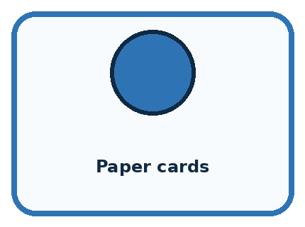
The case to investigate
CASE 1 — Paper cards Clue: fast to revise. Meaning: good for logic test.

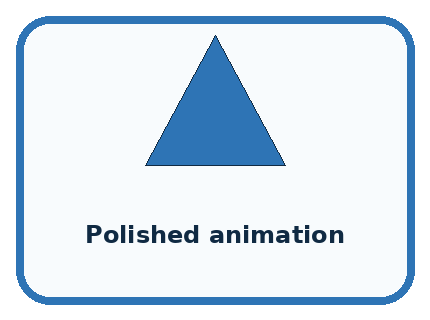
The case to investigate
CASE 2 — Polished animation Clue: looks complete. Meaning: may hide weak process.

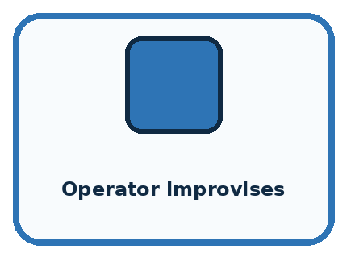
The case to investigate
CASE 3 — Operator improvises Clue: adds secret knowledge. Meaning: invalid simulation.

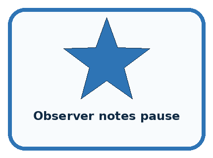
The case to investigate
CASE 4 — Observer notes pause Clue: reveals confusion. Meaning: useful evidence.
Discuss the confusing pair
Which two pictures are easiest to confuse? What evidence separates them?
Keep the limit in view
BOUNDARY A helpful operator can accidentally make a weak design look successful by using unstated human knowledge.
Earlier wording, alternatives and picture transcripts
PICTURE GALLERY
Four Cases, Four Clues
Use the visual cue, then read the evidence carefully.
CASE 1 — Paper cards Clue: fast to revise. Meaning: good for logic test.
CASE 2 — Polished animation Clue: looks complete. Meaning: may hide weak process.
CASE 3 — Operator improvises Clue: adds secret knowledge. Meaning: invalid simulation.
CASE 4 — Observer notes pause Clue: reveals confusion. Meaning: useful evidence.
Change one thing in the pictured case
Change: Insert “if capacity is below count, continue” before accepting a bin.
Prediction: The revised trace rejects X and accepts Y for 4.
Reason: 3<4 is true; 7<4 is false, so Y fits.
Main lesson · Section 6
Trace the separate X/Y bin prototype defect
Distinguish the required baseline result from the actual faulty-card result.
Read the bin contract and faulty instructions
A fictional team turns a storage-bin specification into movable instruction cards.
Bins X capacity 3 then Y capacity 7; valid count 1–9. Select first capacity at least count.
For request 4, write baseline Y before operating cards. Prototype cards mistakenly stop with X immediately.
Return to the activity prototype’s trace structure

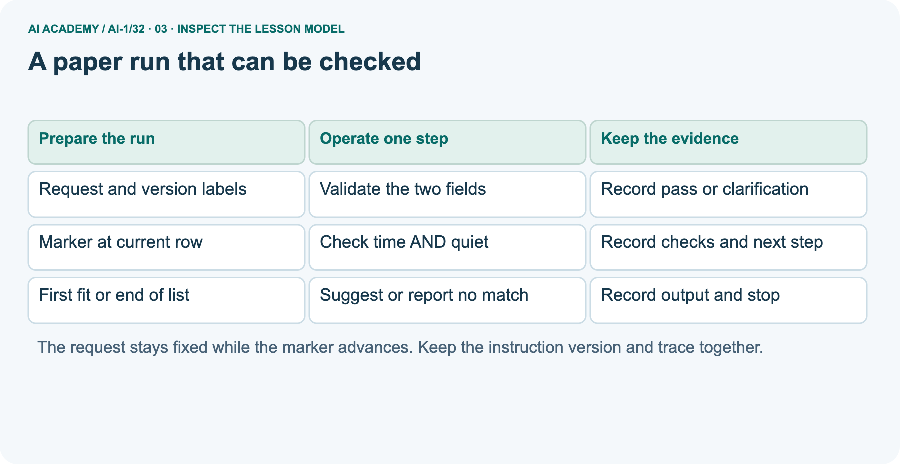

Trace the actual mismatch without repairing it silently

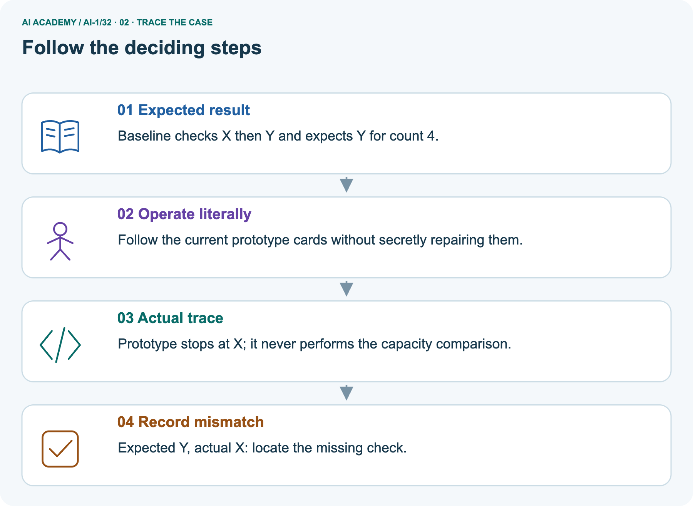

Read the picture one step at a time
Explain what the before-and-after log must preserve
A paper prototype is executable when another person can follow its instructions without guessing your intention. Record the actual wrong result separately from the expected one.
Discovering a missing comparison is useful evidence for repair; pretending the operator followed the intended rule would hide the defect.
Read the labelled picture: What should appear in the test log before and after the repair?
Predict the explicit capacity-check repair
Before opening the repaired-bin picture, add a capacity comparison before accepting a bin and continue to the next row when capacity is too small. Predict the new trace for count 4. What must remain saved from the original run?
Check the repaired trace

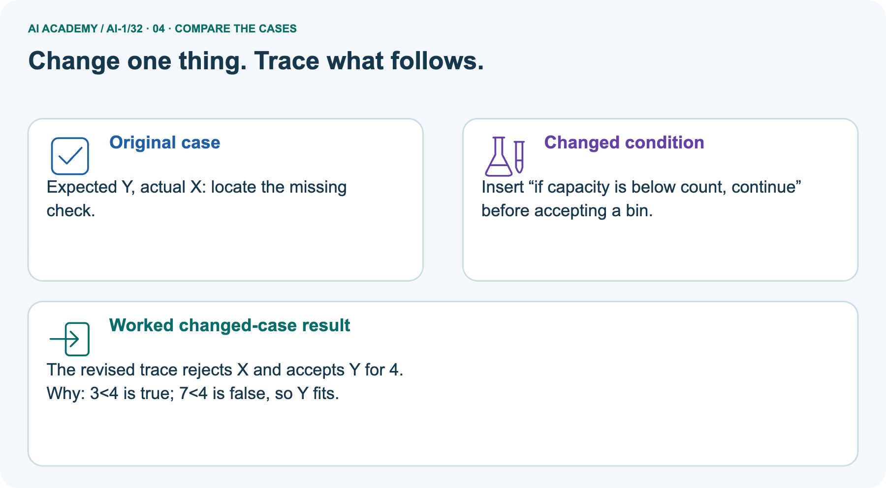

Limit what one repair establishes
One repaired paper case does not establish usability, correctness on every input or performance of a later software implementation.
Earlier wording, alternatives and picture transcripts
WORKED EXAMPLE
Watch the Reasoning, Not Just the Answer
Every step connects a claim to observable evidence.

CASE One student presents an item card while another follows the written sorter process exactly and returns the documented output.
STEP 1 — OBSERVE paper item card
STEP 2 — TRACE partner executes the process without improvising
STEP 3 — CONCLUDE paper output card and observation notes
MODEL REASONING The operator must use only documented inputs and steps. Any question, pause, or improvisation reveals a missing rule, unclear label, or unsupported input. Revise the paper flow before adding technology.
DO NOT OVERCLAIM A helpful operator can accidentally make a weak design look successful by using unstated human knowledge.
What new evidence could change this answer?
A closer explanation
Before operating P1, use the full manual checklist to write the expected result for 9 minutes, Quiet required No. Then run the cards literally. Do not replace a surprising result with the expected one.
Recording disagreement gives you something to investigate; hiding it removes useful evidence.
| Trace step for 9 minutes No | Checks recorded | Next action or output |
|---|---|---|
| 1 Validate | Whole minutes in range; No accepted | Place marker at B1 |
| 2 Check B1 | 10 is greater than 9; quiet unrestricted | Move to B2 |
| 3 Check B2 | 8 is no more than 9; quiet unrestricted | Suggest B2 with reason; stop |
This trace agrees with the expected B2 result. It shows that this run followed the instructions. One matching result does not prove that every request will work or that the prototype is faster than the manual checklist.
This is a system of written rules, not a model trained on examples.
Learn from the worked case
Cover the result before checking it. Say what is given, choose the procedure, and follow one step at a time. Then uncover the result and explain your first mismatch. Ask why a step is allowed, not only what number it produces.
A pictorial worked case: Build a Paper Prototype
The facts we will use

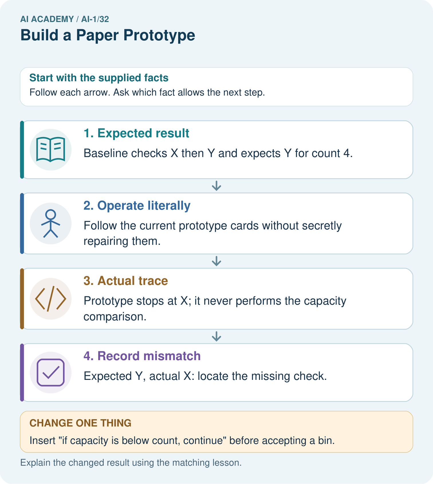

Why this result follows
What this example does not establish
Change one thing: Insert “if capacity is below count, continue” before accepting a bin. Predict the result before checking the explanation. What remains the same?
Main lesson · Section 7
Hand over the prototype without extra hints
Save the version and every run so another person can inspect the result.
Swap roles and record ambiguity
Swap roles and give your partner the request card, catalogue, instruction cards and blank trace sheet. Let them operate without extra hints from the author.
Record any point where they cannot decide what to do from the written instructions. Label and save changes, then repeat the affected run.
Keep development cases separate from any cases your teacher has reserved for a later evaluation.
Keep a repeatable handover and all disagreements
Your handover should let someone repeat a run using the same inputs and versions and check why it stopped. Keep all results, including disagreements. Next week you will organise several routine cases into a test record.
A neat interface is useful, but correctness depends on validation, both conditions, the first-match rule and a clear ending.
Repair both tempting claims
CLAIM A A prototype must look like the final product.
CLAIM B If a person can perform the task, the written process is complete.
STRONG ANSWER FRAME I claim ______ because the evidence shows ______. The process is ______. One limit is ______.
Earlier wording, alternatives and picture transcripts
COMPARE
Same Result, Different Reason
A comparison helps reveal the true concept boundary.
| Case | Evidence | What it shows |
|---|---|---|
| Paper cards | fast to revise | good for logic test |
| Polished animation | looks complete | may hide weak process |
| Operator improvises | adds secret knowledge | invalid simulation |
| Observer notes pause | reveals confusion | useful evidence |
Repair two tempting claims
Repair:
Repair:
A closer explanation
Main lesson · Section 8
Practise: distinguish a bad instruction from a bad execution
Inspect the saved version before diagnosing the first mismatch.
Audit the marker-reset mistake
Suppose the operator starts a fresh 11-minute No request at B2 because the marker was left there. They return B2. The required first fit is B1, and Card 1 explicitly says to restart at B1.
The trace therefore reveals an execution mistake. If the written instructions had omitted the reset, that would instead be an instruction defect. Inspect the saved version before deciding.
Choose the correct repair and preserve the first trace
Preserve the first trace. For an execution mistake, rerun the same written version correctly and label the new run. For an instruction defect, save a corrected version with a new label, state what changed, and rerun.
Never rewrite an old observed result to make a version appear successful.
Run and record the first match in W2
Use workbook W2 for the connected example “Building and tracing a paper prototype”. First fill the input and rule boxes. Try the middle steps before asking for a hint. After a hint, try the next step yourself.
| Plan | Do | Check |
|---|---|---|
| What is given? Which rule or procedure applies? | Record each intermediate step. | Does the result follow? What remains unknown? |
Explain your trace to a partner. Your partner points to one step to check. Swap roles on the next case. Each person writes their own explanation.
Challenge the answer-is-enough claim
Use the worked case for Building and tracing a paper prototype. Proposed explanation: “A correct-looking answer is enough”. Decide whether this explanation is supported.
Point to the step or supplied fact that decides; explain your repair if needed.
Answer on your own before discussion. If you are unsure, say which step you need help with.
Return to the before-and-after bin log
What should appear in the test log before and after the repair?
This is supported practice. Keep the separately named independent case for an attempt before feedback.
Earlier wording, alternatives and picture transcripts
GUIDED PRACTICE
Try It, Check It, Explain It
Use support now so you can succeed independently later.

Explain how the picture story demonstrates this idea: A prototype tests the idea before polish or technology.
Use a fresh example to explain prototype.
Trace a new input → process → output example.
Find and repair the error in: If a person can perform the task, the written process is complete.
Invent one edge case and name the safe response.
PARTNER CHECK Point to the evidence. Do not accept an answer that only repeats the vocabulary word.
A closer explanation
Practise with less help: Run and record the first match
Check your reasoning
Explain the picture
Main lesson · Section 9
Investigate a literal prototype handover
Use complete materials and keep expected outputs separate from observations.
Prepare the shared materials and requests
Partner-as-computer paper run using catalogue B version 1 and the P1 version 1 instruction cards supplied in this lesson. Prepare request cards (9 minutes,No), (11 minutes,No), (7 minutes,No), and (blank,Yes). Before operating, use the full manual baseline to write each expected output on a separate sheet; do not show it to the operator while they run.
Predict, operate, record and diagnose
Assign reader, operator and recorder roles, or combine reader/recorder in a pair. Give the operator only the request, catalogue, saved cards and marker. Record the actual validation, row checks, next steps and output, including pauses or inability to proceed. Reset marker/output for each new request. Compare with expectations afterwards; inspect the saved cards to distinguish an instruction defect from an execution mistake. Keep the first trace, label a rerun and any revised version, and swap roles. Do not invent an observed run if you have only planned it.
Keep a normal case and an edge case clearly separated.
Record what happened—even when it does not match your prediction.
Explain the result, one limitation, and the next useful test.
Retain every run and version
| Case | Prediction | Observed result | What it means |
|---|---|---|---|
| Normal | |||
| Edge |
Before trying: what do I expect, and why? While trying: which step could first go wrong? Afterwards: what did I actually observe, and what should change? Keep “not run” if you only traced the procedure.
Earlier wording, alternatives and picture transcripts
EXPLORER LAB
Partner-as-Computer Prototype
Predict first, test honestly, and explain what the evidence means.

State your prediction before the result is known.
Complete the task: Run the sorter with a partner acting as the computer.
INDEPENDENCE After support is removed, repeat the proof with a fresh case.
Plan → try → check
Main lesson · Section 14
Try alone: make and trace the equipment prototype
Use E1/E2 and preserve separate expected and actual run records.
The independent catalogue and run tasks
Independently make and trace instruction cards for this paper equipment catalogue: E1 first, capacity 3 people; E2 second, capacity 6. Valid input is a whole group size from 1 to 8.
Suggest the first item whose capacity is at least the group size; no booking occurs. Include invalid input and no match. Write expected results, then operate your cards for groups of 5 and 7.
Record both runs and explain every stopping point.
Keep your first attempt
Attempt this case before feedback. Record any help. Earlier examples below are further practice; a case already practised with feedback cannot establish fresh transfer.
Your teacher has the independent answer and scoring criteria. Complete the matching workbook week to keep your practice evidence together.
Use feedback afterwards
Attempt the independent case before hints. Record whether you worked alone, used a hint or followed a model. After feedback, fix the first unsupported step and explain why it changed.
A later check uses a changed case, not a copied answer.
Earlier wording, alternatives and picture transcripts
Independent case: Build a new route through a small catalogue
Week 32 Independent application
Close the worked explanation. Apply the idea to this different question without copying.
Your paper prototype shows an input card, a decision card and an output card. Explain what a person must simulate and what the prototype cannot prove.
My answer, with a trace, calculation or supporting evidence
Create and test
Change one relevant detail. Predict the result before testing. Include a boundary or missing-information case when it helps reveal a limit.
My changed input and expected result
Connect to your project
Build the complete paper sorter: input cards, process guide, output cards, not-sure card, and test log.
The evidence I will keep
Transfer practice from the original programme
Assign three people as input reader, rule follower and output recorder. Run the repaired sorter on paper, metal and an unreadable description. Record expected and observed outcomes. What does this prototype demonstrate?
Use feedback to improve
Main lesson · Section 11
Transfer the prototype record to the sorter portfolio
Keep each context’s materials, versions and runs distinct.
Connect the two contexts
The connected final sequence builds the activity prototype. This section transfers the same materials-and-trace method to your existing sorter portfolio, without requiring a second implementation. Keep catalogue, instructions and observed traces labelled by project and version; an activity-run result is not a sorter-run result.
This week’s sorter materials
THIS WEEK'S CHECKPOINT Build the complete paper sorter: input cards, process guide, output cards, not-sure card, and test log.
Save sorter instruction cards, dated versions and operator traces alongside the manual expected outputs.
Inspect inputs, execution and uncertainty
What real classroom need does this serve?
What information is necessary—and what should stay private?
What happens inside the process?
What normal and edge cases will you test?
When should it say not sure or ask a person?
Prevent hidden operator knowledge
RESPONSIBLE DESIGN A helpful operator can accidentally make a weak design look successful by using unstated human knowledge.
Earlier wording, alternatives and picture transcripts
PROJECT
Helpful Classroom Sorter
Build one coherent system across the year, one evidence-based decision at a time.


My project decision:
Evidence for your project
Main lesson · Section 16
Finish: explain what your paper run demonstrates
Close your notes and distinguish intended behaviour, actual steps and a limited conclusion.
Your exit explanation
Close your notes. Explain this goal in your own words: Build a runnable paper prototype with explicit instructions and visible state
Choose the next changed-case check
If you are unsure, return to the worked picture and explain one arrow. If you are ready, change an input or assumption and justify your prediction.
Save your workbook evidence. At the next review, try a different case before opening your old answer.
Reference bank and extra practice
Choose the reference that helps your next step.
Your quick word guide
Reference · Section 5
Your quick word guide
Use the words to explain a particular step, record or limit.
Core vocabulary
| Word | Meaning | My example |
|---|---|---|
| prototype | early representation used to test an idea | |
| low fidelity | simple version focused on function | |
| simulation | acting out system behavior | |
| operator | person executing the prototype process |
Terms for the connected explanation
| Word | Meaning |
|---|---|
| Instruction | A precise action or decision for the operator to follow |
| Trace | A record of the steps and state during one run |
| Expected result | The result required by the agreed specification |
| Observed result | What actually happened when this version was run |
Repair a claim using a word
CLAIM TO REPAIR A prototype must look like the final product.
Use one vocabulary word and one piece of evidence to repair it:
Earlier wording, alternatives and picture transcripts
VOCABULARY
Words You Can See and Use
The badge is a memory cue; the definition does the real thinking work.


Misconception detective
WORD POWER A strong definition helps you decide something in a new case.
Words used in the closer explanation
Choose a stronger thinking challenge
Reference · Section 10
Choose a stronger thinking challenge
Choose the next useful challenge rather than treating the whole ladder as compulsory.
Pick your next step
RECALL Define prototype.
EXPLAIN A prototype tests the idea before polish or technology.
TRACE Show the input, process, and output.
DIAGNOSE Repair: A prototype must look like the final product.
TRANSFER Apply the idea to a new home or classroom case.
CREATE Design one revealing test.
DEFEND Give a claim, evidence, mechanism, limit, and safe action.
Earlier wording, alternatives and picture transcripts
PRACTICE LADDER
Climb from Recall to Defense
Each step asks for a stronger kind of understanding.

RETRY RULE A coached answer becomes mastery only after you solve a different case independently.
Reference: check your explanation
Reference · Section 12
Reference: check your explanation
Use after practice. Build a new route through a small catalogue is the selected independent case.
Check the evidence and its limit
□ Name or draw the fresh case.
□ Trace input, process, and output.
□ State the conclusion and strongest evidence.
□ Name one limit, failure, missing clue, or fairness/privacy concern.
□ Explain one safe next action or improvement.
Record support
My level: □ Not yet □ With one hint □ Independently □ I can teach it
Earlier wording, alternatives and picture transcripts
MASTERY
Checklist for explaining this week’s idea
Use after practice. Build a new route through a small catalogue is the selected independent case.

EXPLANATION CHECK Build runnable instruction cards, predict from the contract and preserve actual state, outputs and stopping reasons.
Independent evidence:
SELF-CHECK The operator must use only documented inputs and steps. Any question, pause, or improvisation reveals a missing rule, unclear label, or unsupported input. Revise the paper flow before adding technology.
NEXT BRIDGE Carry today's evidence habit into: Test Normal Cases.
Extra practice: Act out a paper prototype
Reference · Section 13
Extra practice: Act out a paper prototype
Try the question before opening its worked explanation.
Read the supplied case and question
A paper prototype has input cards, decision cards and paper, plastic and review trays.
How can a learner simulate it?
Your explanation
Which detail supports the answer, and why does it matter?
Check after trying
Read input, follow written decisions and place a token in a tray. Record the trace. Human simulation does not establish model training.
| Evidence or stage | Value or result |
|---|---|
| Input card | Observe material |
| Decision cards | Follow written checks |
| Token | Place in paper, plastic or review tray |
| Trace | Record each decision |
Earlier wording, alternatives and picture transcripts
Week 32 Worked case
Use the supplied details to practise the weekly concept before attempting the independent question. This case extends the illustrated lesson.
The situation
The question
Worked explanation
Explain it in your own words
Trace the supplied case visually
Act out a paper prototype
A paper prototype has input cards, decision cards and paper, plastic and review trays.
How can a learner simulate it?
Read input, follow written decisions and place a token in a tray. Record the trace. Human simulation does not establish model training.
Reference: original lesson checklist
Reference · Section 15
Reference: original lesson checklist
Use an additional checklist when it helps inspect your explanation.
Targets and evidence
| By the end, I can | How I will show it |
|---|---|
| Build a runnable paper prototype with explicit instructions and visible state | Explain the deciding step, show a trace or test, and state one limit. |
| Record what actually happens without silently repairing the instructions | Explain the deciding step, show a trace or test, and state one limit. |
| Use a trace to distinguish an instruction defect from an execution mistake | Explain the deciding step, show a trace or test, and state one limit. |
Keep your route and first prediction
Remember → watch and explain → try with help → investigate → try independently → keep project evidence. Your teacher may spread this lesson across several classes.
Keep your first prediction. Compare it with what the evidence shows and explain any change.
Earlier wording, alternatives and picture transcripts
Start with this question: A fictional team turns a storage-bin specification into movable instruction cards.
Extra practice: pictures, repair and feedback
Reference · Section 17
Extra practice: pictures, repair and feedback
Attempt each question before opening its explanation. Use one browser or paper copy.
First supported question
A fictional team turns a storage-bin specification into movable instruction cards.
Which labelled step matches this detail? Expected Y, actual X: locate the missing check.
1. Actual trace
2. Record mismatch
3. Operate literally
4. Expected result
Hint if needed: Read the steps in the pictorial case. Match the supplied detail to the stage that performs or records it.
Practice 1: explain the deciding evidence
Check the first explanation
After your attempt, compare with the supported explanation: Record mismatch Expected Y, actual X: locate the missing check.
A paper prototype is executable when another person can follow its instructions without guessing your intention. Record the actual wrong result separately from the expected one.
Discovering a missing comparison is useful evidence for repair; pretending the operator followed the intended rule would hide the defect.
Changed-case question
Changed-case practice: Insert “if capacity is below count, continue” before accepting a bin. Which conclusion is supported by the supplied facts?
1. This one example guarantees correct results for every future input.
2. The revised trace rejects X and accepts Y for 4.
3. We can decide the result without examining the changed input or the procedure.
Hint if needed: Use the changed condition and the deciding step in the pictorial trace. The answer must say what follows from those facts.
Practice 2: explain the deciding evidence
Check the changed case
After your attempt, compare with the supported explanation: The revised trace rejects X and accepts Y for 4. 3<4 is true; 7<4 is false, so Y fits.
Repair and save your work
Review Design the Decision Process (ai-1/31). Goal: Design a decision process that covers valid, invalid and no-match requests.
Short practice: Where does the first original rejection occur, and why is K3 not originally selected?. Return to this week and explain what you changed.
Review Find a Real Problem (ai-1/29). Goal: Describe a specific user difficulty using supplied evidence without inventing its cause.
Short practice: Write a one-sentence project goal and say what evidence would count as a failure.. Return to this week and explain what you changed.
Review Prompts Are Design Instructions (ai-1/26). Goal: Write a prompt with a clear task, supplied evidence and checkable output requirements.
Short practice: What must happen if B instead conflicts with another equally authoritative duration record?. Return to this week and explain what you changed.
Use Download completed work in the hosted lesson to export your answers, reflections, practice feedback and code-run evidence. Open the HTML copy to read or print it.
Drafts stay in this browser when storage is available; clear drafts on a shared device.
Earlier wording, alternatives and picture transcripts
Use this supported practice once, in the browser or on paper. Keep the reserved independent assessment for a separate first attempt before teacher feedback.
Repair a missing building block
Keep your completed work
Reference: the six-picture journey
Reference · Section 18
Reference: the six-picture journey
Revisit the picture that serves the current question; key diagrams already sit beside the main explanation.
01. Build a Paper Prototype: the case

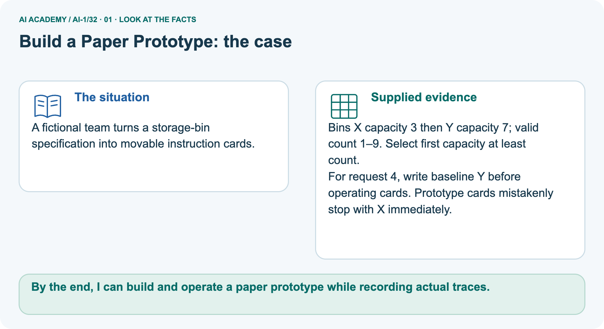

A fictional team turns a storage-bin specification into movable instruction cards. Supplied facts: Bins X capacity 3 then Y capacity 7; valid count 1–9. Select first capacity at least count.
For request 4, write baseline Y before operating cards. Prototype cards mistakenly stop with X immediately.
Point to the given fact that matters most. Explain why it matters.
02. Follow the deciding steps
Expected result: Baseline checks X then Y and expects Y for count 4. → Operate literally: Follow the current prototype cards without secretly repairing them. → Actual trace: Prototype stops at X; it never performs the capacity comparison. → Record mismatch: Expected Y, actual X: locate the missing check.
Point to each numbered stage and explain which recorded input it uses.
03. A paper run that can be checked
A paper run that can be checked. Request and version labels | Validate the two fields | Record pass or clarification. Marker at current row | Check time AND quiet | Record checks and next step.
First fit or end of list | Suggest or report no match | Record output and stop
Read the labels and values. Explain the relationship the model shows.
04. Change one thing. Trace what follows.
Original case: Expected Y, actual X: locate the missing check. Changed condition: Insert “if capacity is below count, continue” before accepting a bin. Expected result: The revised trace rejects X and accepts Y for 4.
Reason: 3<4 is true; 7<4 is false, so Y fits.
Predict before checking the worked changed-case result. Name what changed and what the supplied facts allow you to conclude.
05. Connect the explanation to its limit

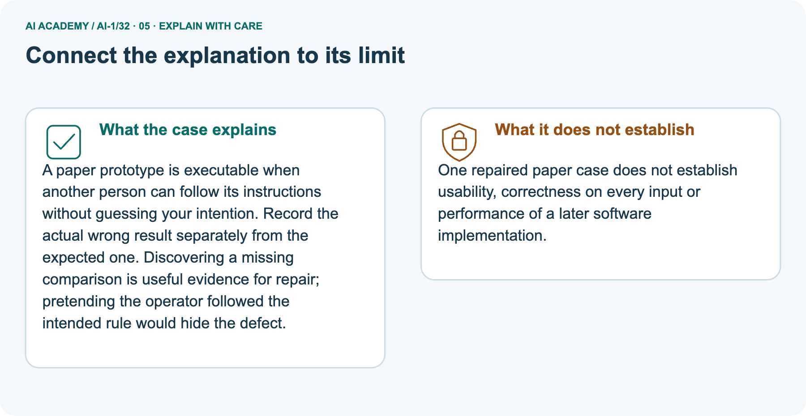

A paper prototype is executable when another person can follow its instructions without guessing your intention. Record the actual wrong result separately from the expected one.
Discovering a missing comparison is useful evidence for repair; pretending the operator followed the intended rule would hide the defect.
Limit: One repaired paper case does not establish usability, correctness on every input or performance of a later software implementation.
Explain the case, then point to a limit on the claim.
06. Make the idea visible in your project

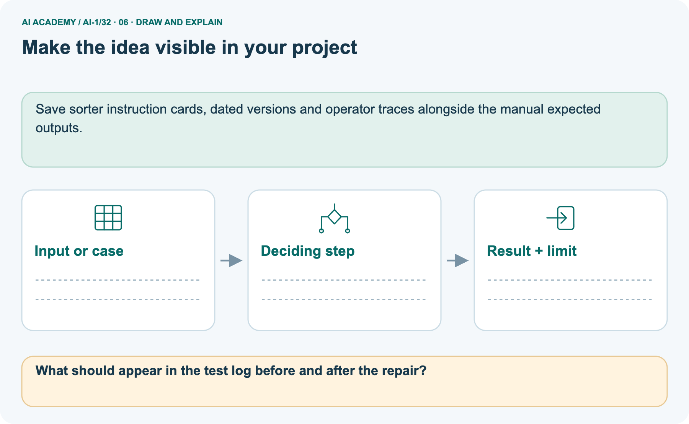

Save sorter instruction cards, dated versions and operator traces alongside the manual expected outputs. Draw your input, deciding step, result and limit.
Supported question: What should appear in the test log before and after the repair?
Draw your project trace and justify the deciding step using evidence.